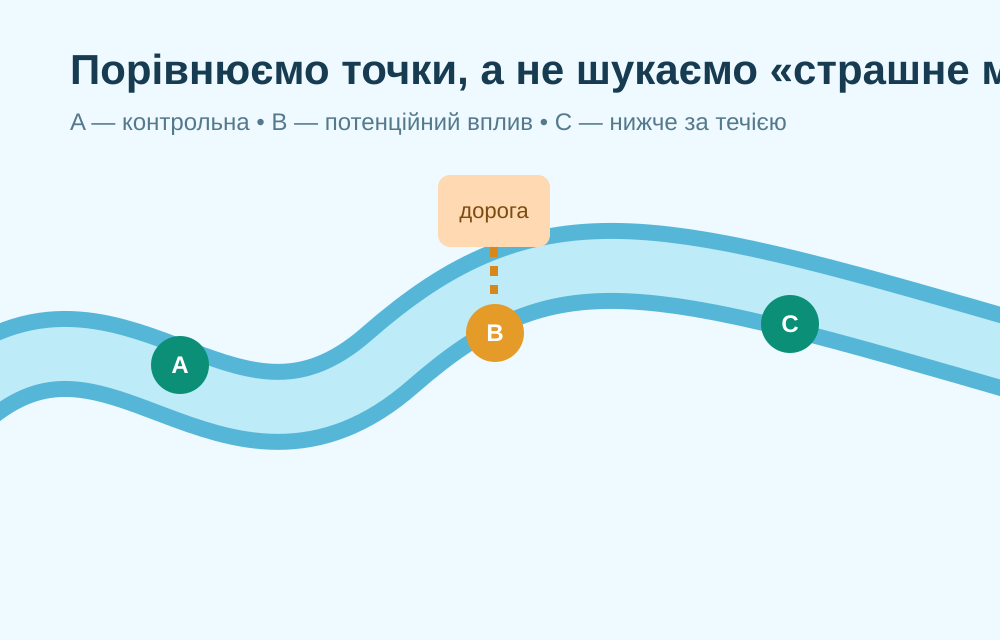
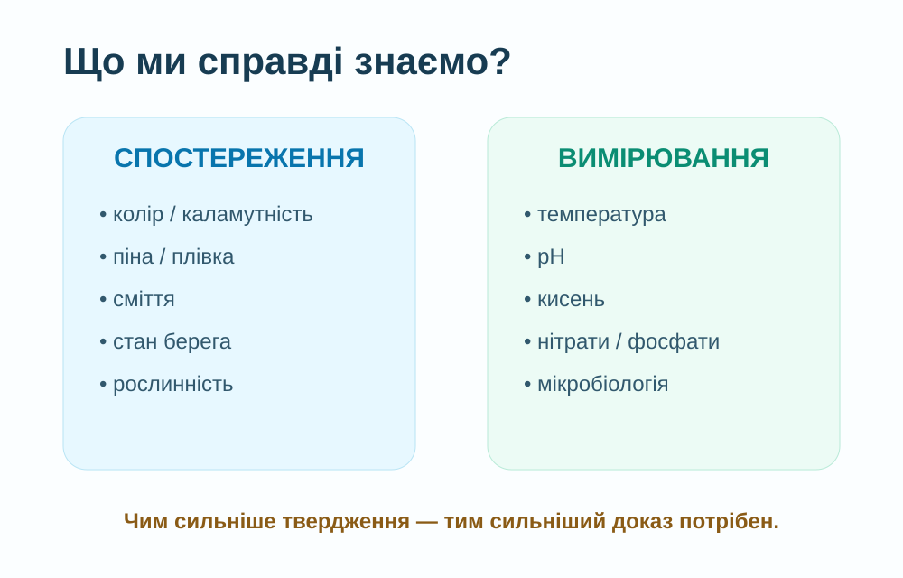
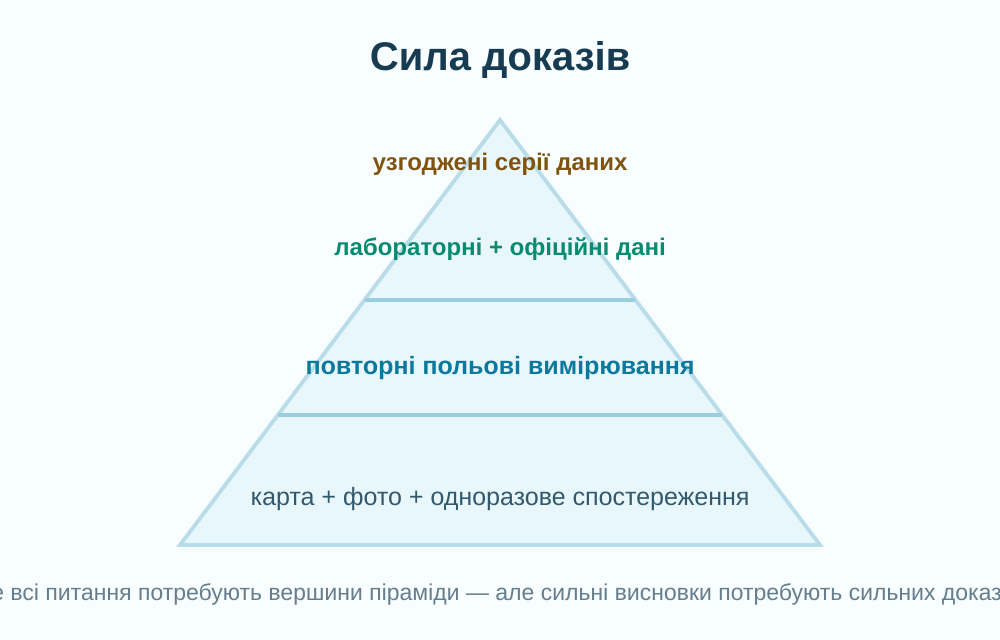

Екологічний стан
Оцінка стану водної системи не зводиться до одного кольору чи запаху. Вона ґрунтується на сукупності біологічних, фізико-хімічних, гідроморфологічних та інших даних.
Сьогодні не «вивчаємо водойму» з готового тексту. Ви працюєте як дослідники: плануєте маршрут, фіксуєте спостереження, відділяєте факт від припущення, зіставляєте дані й формулюєте обережний висновок про екологічний стан.

Позначте всі чотири правила. Якщо польова робота неможлива — використовуйте віртуальний режим на карті.

Не шукайте «найбрудніше місце». Кращий дизайн — порівняти 2–3 безпечні точки: вище й нижче потенційного джерела впливу або природнішу й забудованішу ділянки.
Підкладка — OpenStreetMap. Карта показує просторовий контекст, але сама по собі не доводить забруднення.

Колір, каламутність, сміття, стан берега та рослинності — ознаки. За ними можна сформувати гіпотезу, але не можна «на око» визначити нітрати, важкі метали, бактерії чи токсини.
У 2026 році програма державного моніторингу поверхневих вод охоплює 553 пункти у семи річкових басейнах України; 142 пункти розташовані на масивах, з яких забирають воду для питних і господарсько-побутових потреб.
Отже, один виїзд дає «знімок», а моніторинг — серію зіставних вимірювань у просторі й часі.
Держводагентство: програма моніторингу вод 2026 →Як працює моніторинг поверхневих вод →
Сильний висновок поєднує карту + повторювані польові спостереження + вимірювання + лабораторні/офіційні дані. Чим серйозніше твердження — тим сильніші докази потрібні.
Під час перегляду знайдіть відповідь: чому супутник не замінює польовий відбір проб, а доповнює його?
NASA SVS — сторінка відео →Оцінка стану водної системи не зводиться до одного кольору чи запаху. Вона ґрунтується на сукупності біологічних, фізико-хімічних, гідроморфологічних та інших даних.
Точка для порівняння, де вплив досліджуваного чинника очікується меншим. Без порівняння набагато важче відрізнити локальний сигнал від природного фону.
Одне спостереження може бути випадковим. Повтор у той самий спосіб у різні дні та точки робить висновок значно надійнішим.